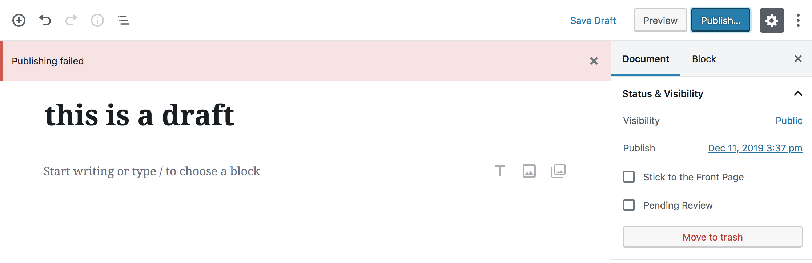
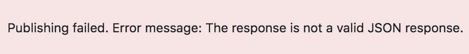
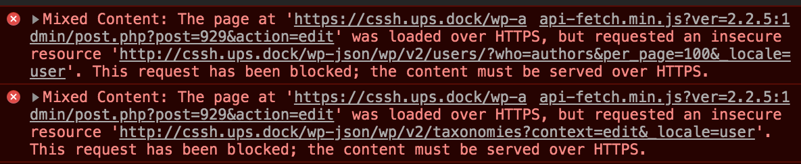

Recently while working on a WordPress project with Ups Dock, I encountered a weird error where I wasn’t able to update or publish a simple post in my local WP admin.
It looked something like this:

Sometimes the error message would be slightly more helpful: Publishing failed. Error message: The response is not a valid JSON response.

And if I popped open the console, I saw these errors:

Since the error message had to do with a JSON response, I initially thought it was a Gutenberg or ACF issue. But it turned out this was happening because I was on the https WP admin (i.e. https://project.ups.dock/wp-admin), not the unsecure WP admin (http://project.ups.dock/wp-admin).
It was a CORS error!! I was trying to modify a non-https domain from a https domain. Switching to a non-https WP admin allowed me to publish posts with no problem.